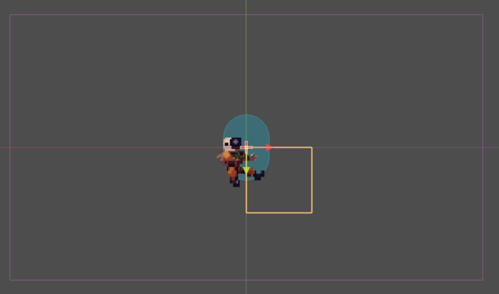
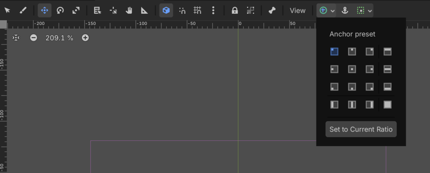
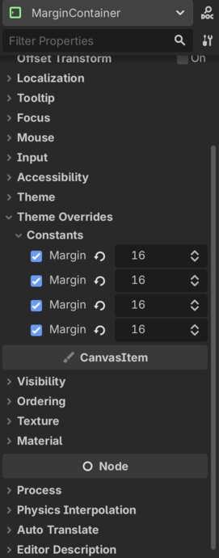
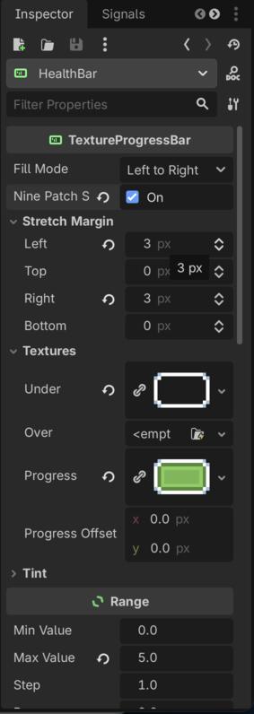
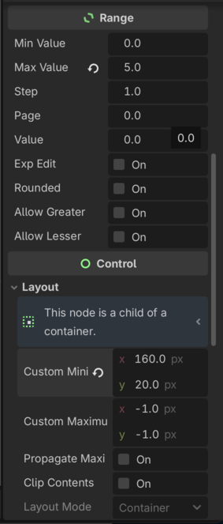
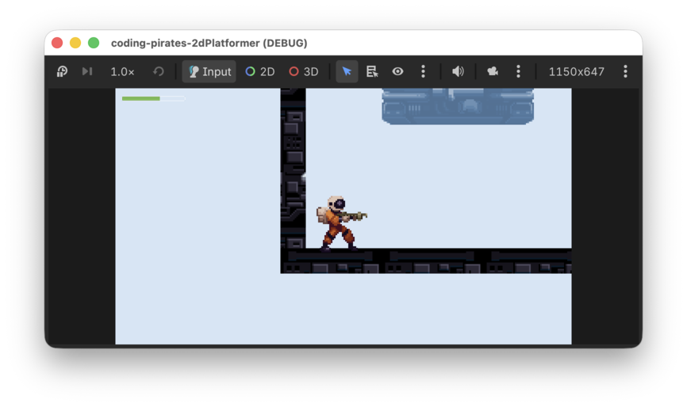

Godot 2D Platformer - level 16, healthbar
Vores spil begynder at ligne noget nu! I de næste par lektioner vil vi finpudse og tilføje lidt UI (user interface) sådan at vi kan starte vores spil fra en start skærm, vise en Game Over skærm når man er død og alt sådan noget.
I første omgang vil vi lave en healthbar så vi kan se hvor meget
energi vores Player har.
Indledende tanker
Den gode nyhed er at der ikke skal lavet nye komponenter til den opgave.
Du tænker måske
At opdatere en healthbar...er det ikke en opgave for vores
HealthComponent?
First of all...godt tænkt! Men...hvad ville konsekvensen være hvis vi
lod vores HealthComponent stå for at opdatere en
healthbar?
Det ville betyde at alle som bruger en
HealthComponent nu også skulle have en healthbar og det vil
vi vel ikke have for vores Walker f.eks. Så derfor er det -
i dette tilfælde - ikke HealthComponents opgave at opdatere
healthbar, det er en ren Player ting, men
Player bruger så værdierne som den kan få fra
HealthComponent.
Så det vi skal er:
Lad os komme i gang.
Tilføje en
TextureProgressBar til vores Player
Vi skal igennem mange af de samme øvelser som vi lavede i vores 2D space shooter da vi tilføjede en healthbar den gang.
I første omgang skal vi have et sted vi kan smide noget UI i, så vi
tilføjer et CanvasLayer
som er lag som ligger sig i et lag ovenpå vores andre noder så det altid
er synligt.
MarginContainer
I vores UI lag vil vi smide ovres healthbar men vi er nødt til lige at pakke den lidt pænt ind så den ikke bare klæber direkte til kanten af skærmen.
Til det kan vi bruge en MarginContainer,
som er en container vi kan putte andre ting i, og
MarginContainer vil så sørge for at der kommer det luft
omkring dens "children" som vi har fortalt den at der skal være.
Så vi tilføjer en MarginContainer i vores
CanvasLayer.
Nu kan du se en gul firkant i midten af vores Player
scene.

Den viser hvor vores MarginContainer vil placere sig. Så
nu kunne man tro at hvis vi tilføjede en healthbar i vores
MarginContainer nu ville den svæve rundt midt på
skærmen.
Det vil den ikke, det er en "fejl" i den måde Godot renderer UI på.
Men vi skal alligevel lige være sikre på at vores
MarginContainer står rigtigt.
Den gode nyhed er at det er nemt at gøre! Vi skal bruge "anchors" som
fortæller en MarginContainer (eller andre "controls" - som
man kalder UI komponenter samlet i Godot) hvor de skal sætte sig.
Med anchors kan vi sige "MarginContainer sæt dig i
øverste venstre hjørne", og så gør den det, uanset hvor "øverste venstre
hjørne" så end er.
Du kan læse mere om anchors i dokumentationen her
I topbaren over vores scene kan du nu, hvis du vælger
MarginContainer se et lille plus i en grøn cirkel. Tryk på
det for at se, hvor vores MarginContainer sidder

Som du kan se er "Top Left" valgt i dette tilfælde (hvis den ikke er
det ved dig, så vælg den). Perfekt! Det betyder at vores
MarginContainer vil sætte sig i øverste venstre hjørne af
dens parent CanvasLayer og dermed i øverste venstre hjørne
af skærmen.
En sidste ting vi skal huske i vores
MarginContainer...margin...når vi nu har den fine container
til det!
Vælg din MarginContainer og kig i "Inspectoren" i højre
side. Under "Theme Overrides" kan du se "Constants" og her kan du sætte
margin for left, top, right og bottom. Sæt dem alle 4 til 16.

Så! Nu har vi en fin MarginContainer som sætter sig i
øverste venstre hjørne og smækker 16px margin rundt om de ting vi putter
i den.
TextureProgressBar
Lad os nu tilføje en TextureProgressBar
i vores MarginContainer.
Omdøb den til at hedde
Den skal bruge et par textures som du kan finde i assets mappen:
- bar_foreground.png
- bar_background.png
Træk dem over i din res/assets mappe (gerne i en ui mappe så der er lidt styr på det)
Herefter kan du vælge din TextureProgressBar og trække
dine nye assets over i "Inspectoren" i højre side sådan at:
- bar_foreground.png bliver assigned til Textures -> Progress
- bar_background.png bliver assigned til Textures -> Under
Og så skal vi lige huske at enable "Nine Patch Stretch" og sætte Left og Right til 3px sådan at vores progressbar kan lave en fin bar til os.
Det ser sådan her ud

Sidste to rettelser:
- Sæt "Max Value" under "Range" til 5
- Sæt "Custom Minimum Size" under "Layout" til x = 160 og y = 20 så vi kan se vores healthbar

Det var step et
Opdatere
TextureProgressBar med
health_component.health
Så skal vi have opdateret vores TextureProgressBar - som
vi kaldte for HealthBar i vores player.gd
script.
Vi vil gerne gøre to ting:
Lad os følge samme mønster som vi har gjort før og lave en
@export var health_bar: TextureProgressBar i vores script
som vi kan assigne i 2D Workspacet som vi har gjort så mange gange med
vores forskellige components.
Sæt den initielle værdi i
_ready
Nemt!
func _ready() -> void:
# Alt hvad der har med health at gøre
health_component.max_health = 5
health_bar.max_value = health_component.max_health
health_bar.value = health_component.health
is_dying = false
add_to_group("Player")Opdater værdien i
_process
Nemmere!
Bemærk at vi opdaterer health uanset om vi er døende eller ej
func _process(delta: float) -> void:
# er vi ved at dø, så bare stop her
if is_dying:
return
# Opdater health uanset om vi er igang med at dø eller ej
health_bar.value = health_component.health
# Kun hvis vi okke er døde kommer vi videre her til
# Er vi så døde i mellemtiden?
if health_component.is_dead():
# Ja det var vi, så kald die funktionen der
# sørger for at vi dør pænt :)
await die()
else:
animation_component.handle_move_animation(input_component.horizontal_direction)
animation_component.handle_jump_animation(gravity_component.is_jumping, gravity_component.is_falling)
if input_component.shoot_was_pressed():
var direction = Vector2.LEFT if animation_component.get_sprite_direction() == -1 else Vector2.RIGHT
shoot_component.handle_shoot_requested(position, direction, Vector2(16, 0), "Enemy")Ooooog
Kør dit spil og se om ikke din progressbar opdaterer sig som den skal.
Når vi nu ser den i den virkelige verden ser den progressbar lidt lille ud hva!

Lad os lige prøve at skrue lidt på den. Ved os ser
- x: 300
- y: 60
pænt ud, men prøv dig frem og se hvad du synes ser godt ud, det er jo dit spil :)
Det var det
I næste level fortsætter vi vores UI forbedringer og får lavet en Game Over skærm så vi kan dø med værdighed og starte igen. Vi ses.